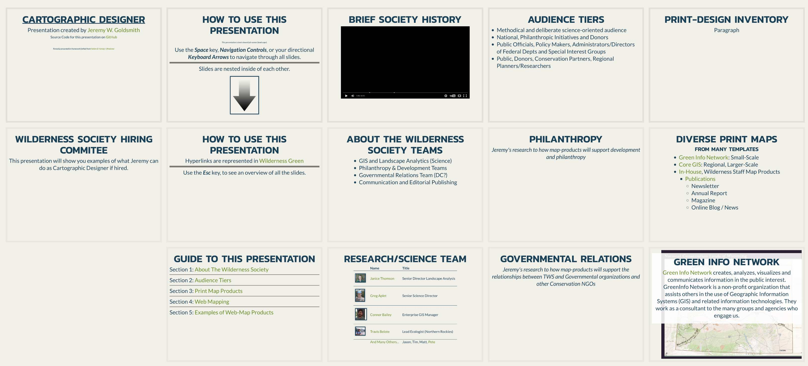
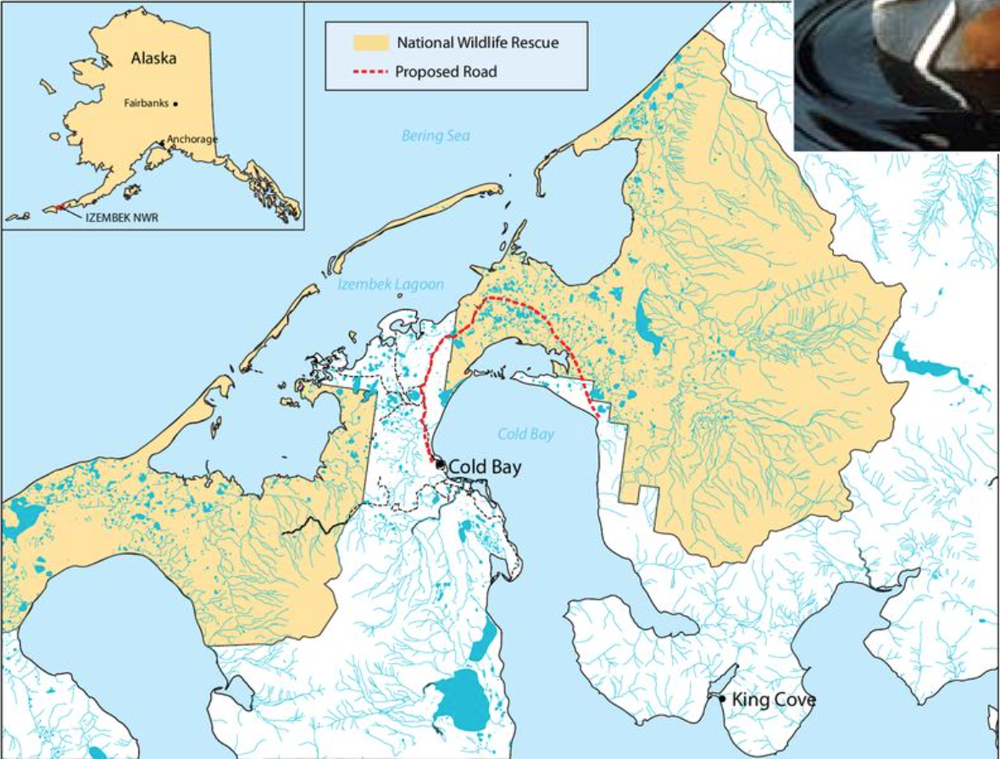
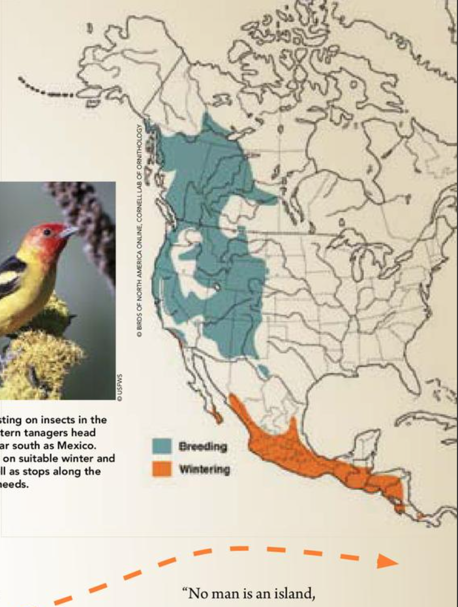
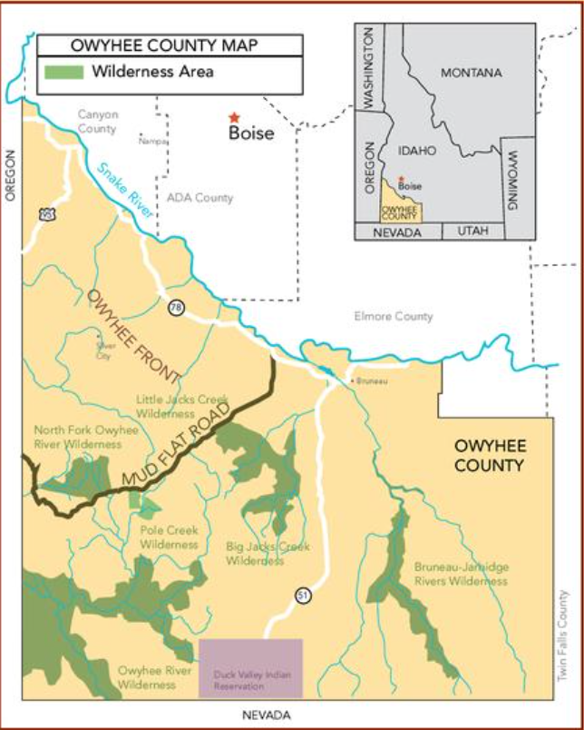
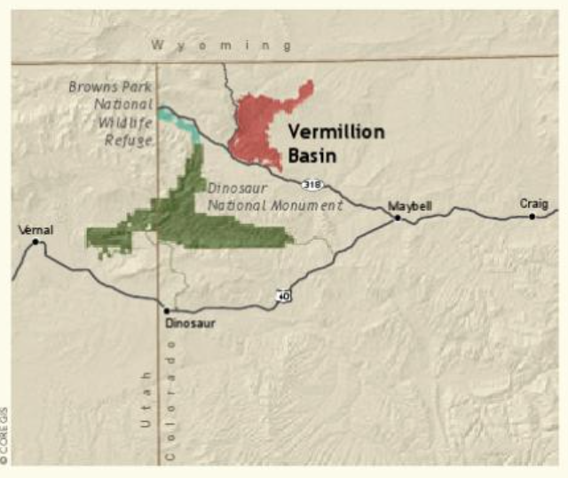
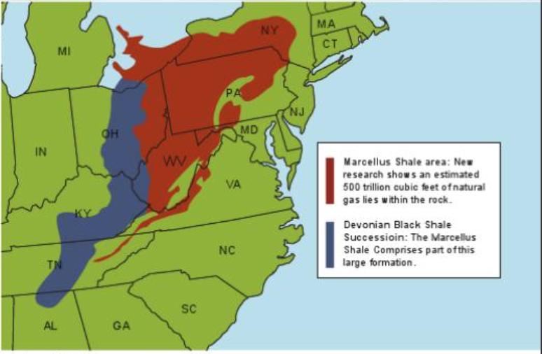
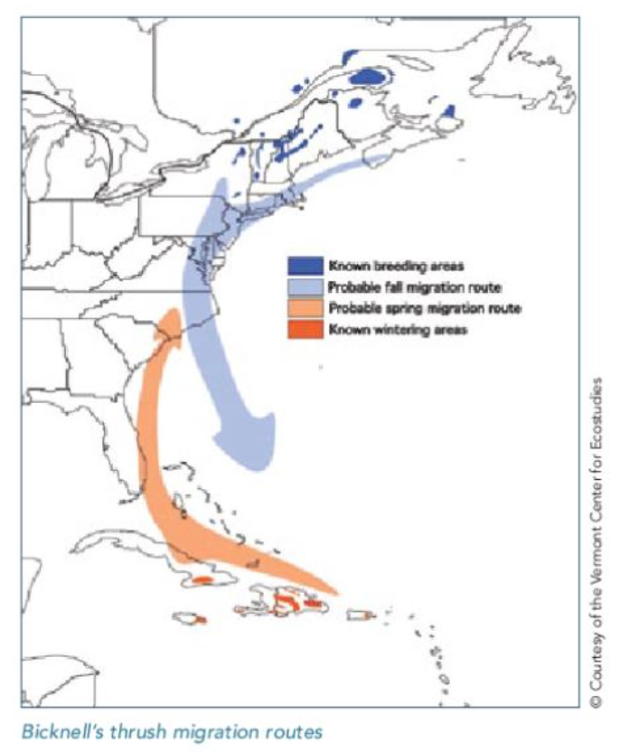
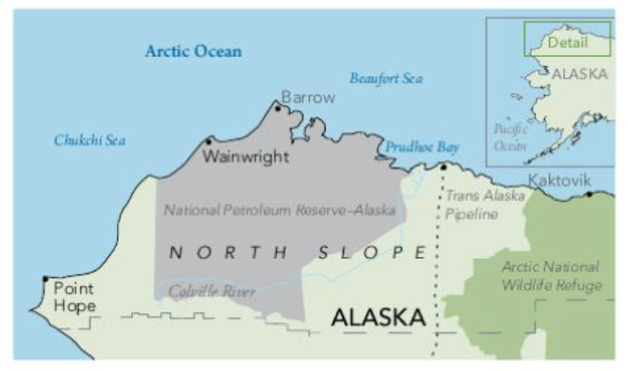
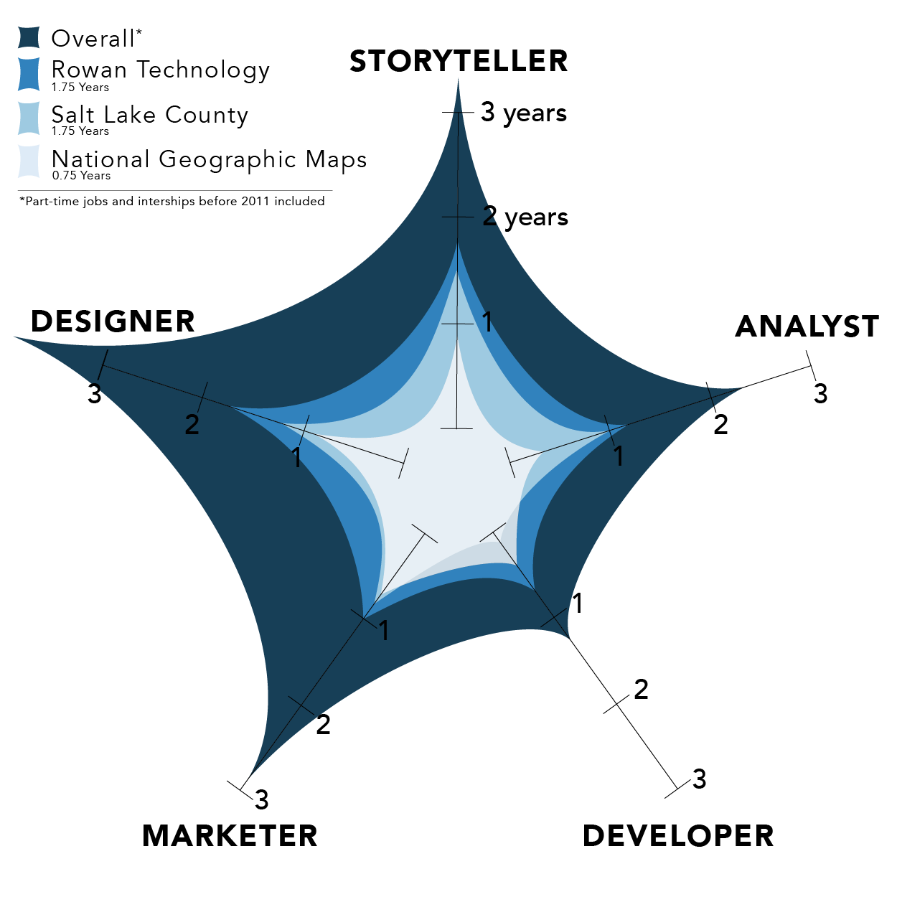

Cartographic Designer
Presentation created by Jeremy W. Goldsmith
Source Code for this presentation on GitHub
Reveal.js presentation framework forked from Hakim El Hattab / @hakimel
Hiring Committee
This presentation is a representation of Jeremy's research, enthusiasm, questions, ideas, designs, qualifications, and capabilities.
How To Use This Presentation
Use the Space key,
... to step through ... each frame.Or use the Navigation Controls in the bottom right, or your directional Keyboard Arrows to navigate.
How To Use This Presentation
Hyperlinks are represented in Wilderness Green
Use the Esc key, to see an overview of all the slides.
Guide To This Presentation
Section 1: About The Wilderness Society
Section 2: Audience Tiers
Section 3: Issues, Tools, & Datasets
Section 4: Print Maps
Section 5: Web Maps
Section 6: Other Web-Map Products
Section 7: About Jeremy Goldsmith
Section 8: Conclusion / Thanks
Brief History
Teams
- Science / Research / GIS
- Philanthropy & Partnerships
- Conservation Policy, Campaigns, and Programs
- Marketing, Communications, Content, and Publishing
Science / Research / GIS
| Image | Name | Title |
|---|---|---|
 |
Janice Thomson | Senior Director Landscape Analysis |
|
|
Greg Aplet | Senior Science Director |
 |
Connor Bailey | Enterprise GIS Manager |
 |
Travis Belote | Lead Ecologist (Northern Rockies) |
| And Many Others... | Jason, Tim, Matt, Pete...Etc. |
Mark Wilbert was the former Enterprise GIS Manager for TWS.
Philanthropy / Partnerships
| Image | Name | Title |
|---|---|---|
 |
Ame Hellman | Vice President of Philanthropy |
 |
Cathy Grams | Deputy Vice President, Strategic Services |
 |
Kristie Malley | Senior Director, Legacy Giving |
 |
Michael Carroll | Senior Director, National Partnerships |
 |
Allen May | Senior Director, Philanthropy |
| And Many Others... | Amy, Laura, Kelly, Mike, Liz...Etc. |
Conservation Policy / Campaigns / Programs
| Image | Name | Title |
|---|---|---|
 |
Melyssa Watson | Vice President for Conservation |
 |
Bob Ekey | Senior Director, Conservation Agenda Planning |
 |
Mike Anderson | Senior Policy Analyst |
 |
Jeff Widen | Senior Regional Conservation Representative |
| And Many Others... | Nicole, Alan, Paul, Sally, Jeremy...Etc. |
Marcomm / Content
| Image | Name | Title |
|---|---|---|
 |
Kitty Thomas | Vice President, Communications |
 |
Michael Reinemer | Deputy Director, Wildlands Communications |
 |
Jonathan Meyers | Senior Director, Digital Strategy |
 |
Laura Bailey | Deputy Director of Content Development |
 |
Max Greenberg | Senior Digital Content Producer |
| And Many Others... | Jamie, Sarah, Kate, Tim, Jennifer, Mason...Etc. |
Target Audiences
- Donors, Legacy Givers, Philanthropists, Conservationists
- Federal / Governmental Staff
- Public, Donors, Conservation Partners, Regional Planners/Researchers
Philanthropy
How will map-products support philanthropy, corporate/legacy giving, and strategic partnerships?
Federal Government
How can TWS map-products support relationships with congressional and presidential staff overseeing Natural Resources, Wilderness, and Environment?
How can map-products support relationships with DOI and USDA agencies?
Diverse Groups of Federal Stakeholders
- Bureau of Land Management
- Bureau of Reclamation
- US Fish & Wildlife Service
- National Park Service
- US Forest Service
- House Committee on Natural Resources
- Senate Committee on Energy and Natural Resources
- White House (NSTC) Committee on Environment, Natural Resources, and Sustainability
MARCOMM
How will map-products support and bolster communications, publishing, marketing, digital content and press releases?
Hot Issues
- Land and Water Conservation Fund
- Wilderness/Monument Designations (Example Arctic Refuge)
- National Forests & BLM Action Centers
- Oil, Gas, and Renewable Energy
Significant GIS Datasets
Examples of Publically Available Authoritative GIS Data| Federal | State | Regional Examples |
Local Examples |
|---|---|---|---|
| USGS Earth Explorer and National Map |
Colorado BLM GIS | Regional Data (Colorado) | City/County Data (CO) |
| DATA.GOV | Montana/Dakotas GIS | Regional Data (Montana) | City/County Data (Dakota) |
| National Park Service IRMA | Arizona BLM GIS | Regional Data (Arizona) | City/County Data (AZ) |
| USFS Geodata | Utah BLM GIS | Regional Data (Utah Clearinghouse) | City/County Data (Road) |
| USFWS Geospatial Services | Nevada BLM GIS | Regional Data (Nevada) | City/County Data (CO) |
| BLM-PLSS Data | Oregon/Washington BLM GIS | Regional Data (Oregon) | City/County Data (Washington) |
| Wyoming BLM GIS | Regional Data (Wyoming) | City/County Data (WY) | |
| 2008 BLM/USFS PEIS | California BLM GIS | Northern Sierra Partnership | Midpen Regional Open Space District |
| NatureServe Data & Tools | New Mexico BLM GIS | Regional Data (New Mexico) | City/County Data (CO) |
| BLM Alaska's SDMS Alaska's GIS Clearinghouse |
Regional Data (Colorado) | City/County Data (CO) |
GIS Inventory and NGIC are also good resources for authoritative GIS datasets
“Additional [GIS] support at the enterprise level would be great, but not a primary component of the Cartographic Designer position.” -Connor Bailey
GIS Tools
- External / Public ArcGIS Server
- Internal / Private ArcGIS Server
- ArcGIS Online Enterprise Account
- Microsoft One Drive
- Personal 15" MacBook Pro
- Adobe Creative Cloud
- Dual-Operating Systems with ArcGIS Desktop & QGIS
Print Inventory
From Wilderness Magazine 2009-2010
From Wilderness Magazine 2009-2010
From Wilderness Magazine 2009-2010
From Wilderness Magazine 2010-2011
From Wilderness Magazine 2010-2011
From Wilderness Magazine 2011-2012
From Wilderness Magazine 2011-2012
Diverse Print Maps
from many templates
- Green Info Network: Small-Scale
- Core GIS: Regional, Larger-Scale
- Grand Canyon TrustStephanie Smith
- In-House, Wilderness Staff Map Products
- Publications
- Newsletter
- Annual Report
- Magazine
- Online Blog / News
Green Info Network
Green Info Network creates, analyzes, visualizes and communicates information in the public interest. GreenInfo Network is a non-profit organization that assists others in the use of Geographic Information Systems (GIS) and related information technologies. They work as a consultant to the many groups and agencies who engage us.
CORE GIS | Matt Stevenson
CORE GIS offers cartographic, data-analysis & development, web-mapping, and conservation planning services. They specialize in designing eye-catching maps that attract attention and help you convey your message.
Grand Canyon Trust | Stephanie Smith
Stephanie Smith is a private Carto Service cartographer. /bio of GCT and Stephanie Smith cartographic services
In-House Publications
(+ Outsourced Graphic Designers)
Summary of InDesign/Publications from Communications Professionals at TWS.
In-House GIS Staff
A quick example of a MXD Export from TWS staff.
“I would like to see more web products and interactive features.” -Connor Bailey
Inventory of Web-Map Products
ArcGIS Embedded Map Services
ArcGIS Story Maps
Web Map Product Examples
In-Line with Text | News/Blog Publishing
- National Geographic: MapPublisher, Mapbox and Leaflet
- Lifewatch INBO: CartoDB (SQL), OpenStreetMap
- NY Times: Google Maps
- MapBox Blog: MapBoxGL
- National Geographic: Custom HTML, Javascript, CSS for popup divs overlaying a map.png
Web Map Product Examples
Custom, Full-Page Layout
- Global Forest Watch: CartoDB, Google Earth Engine
- No Ceilings: d3.js, topojson.js, jquery,
- American Panorama: CartoDB, Leaflet, d3.js
- 50 Years of Rolling Stones Tours: CartoDB, reveal.js, cartodb.js, CSS
- ProPublica:WebGL, OpenGL, Ruby,
#wearethewild / @wilderness
Bio Key
Nativity: Los Angeles, California
Educated: University of Oregon
Resided: CA - OR - HI - UT - CO - NYC
Experiences
Skills
| Tool | Components | Type | Proficiency (years) | Projected Usage |
|---|---|---|---|---|
| ESRI Products | ArcMap, ArcServer, AGOL | Geospatial | 5+ | Daily–Weekly |
| Adobe Creative Suite | Ps, Ai, Id, Ae, Lr, Pr | Design | 7+ | Daily–Weekly |
Goals
Passions
Thank You!
You can review Jeremy's Preparation Notes* for this opportunity
*Jeremy conducts his work as transparent as possible.
To get a hold of Jeremy, or see his content online, please
e-mail him, visit his website, or checkout his news-feed.
Thanks you for your consideration and review of this presentation.